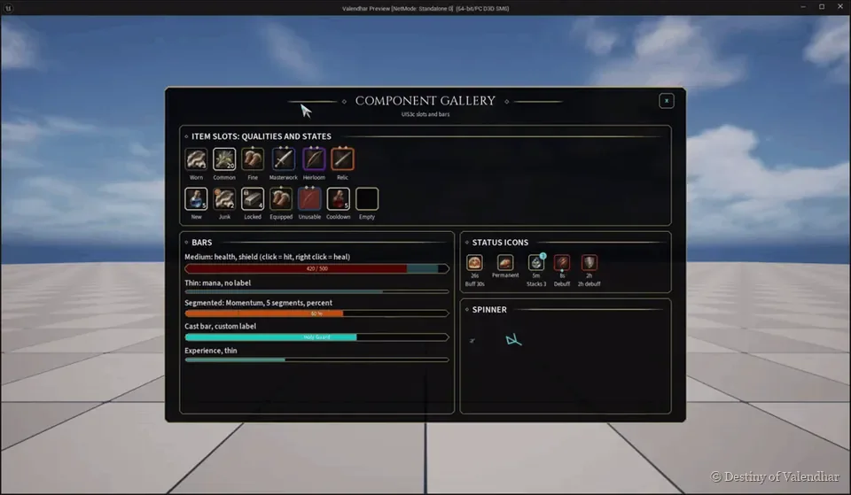
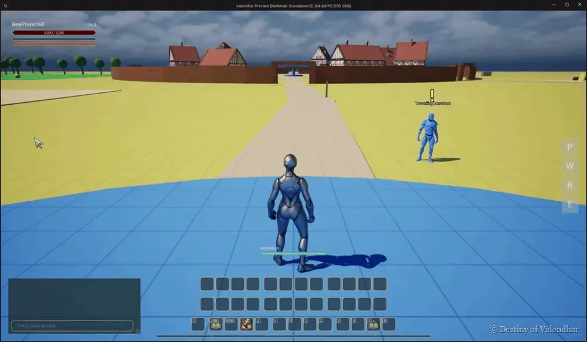

Benutzeroberfläche
Die eigene Oberfläche des Spiels, Stück für Stück in der Unreal Engine gebaut und getestet.
Fenster, Knöpfe, Leisten und die Fähigkeitenleiste, für Destiny of Valendhar gezeichnet und in der Engine zusammengesetzt. Jeder Baustein wird zuerst für sich getestet, damit die echten Menüs aus Teilen entstehen, die schon funktionieren.
 1 Min.Teil 1Eine eigene Oberfläche: Optionen und Aktionsleiste
1 Min.Teil 1Eine eigene Oberfläche: Optionen und Aktionsleiste 2 Min.Teil 2Eine Galerie der Oberflächen-Bausteine
2 Min.Teil 2Eine Galerie der Oberflächen-Bausteine
1½ Min.Teil 3Gegenstandsfelder, Leisten und Statussymbole ½ Min.Teil 4Meldungen, Banner und Tooltips
½ Min.Teil 4Meldungen, Banner und Tooltips
1½ Min.Teil 5Das neue HUD im Spiel 2 Min.Teil 6Hauptmenü, Questtagebuch und Dialogseiten
2 Min.Teil 6Hauptmenü, Questtagebuch und Dialogseiten